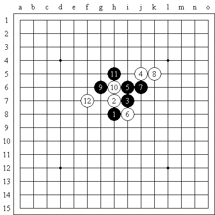
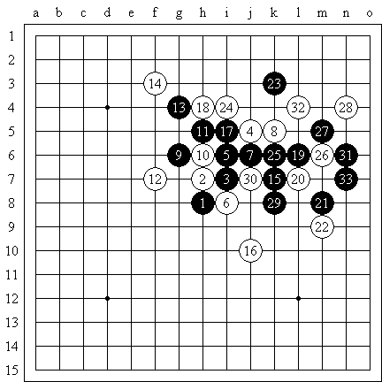

黑先胜
#1 黑先胜 作者：江南新绿 发表时间：2008-8-26 22:52:06

反正现在用机器算ｖｃｔ很快的。用黑石结合renjusolver似乎更强，但加上人的作用就更好了。
参考答案：

#2 Re:黑先胜 作者：billli 发表时间：2008-8-27 5:10:58
=======上图对应的爱五子棋谱代码如下，以便你拆解：========
h8h7i7j5i6i8j6k5g6h6h5f7g7g5k7
======================================================
 问题解答.rar
问题解答.rar#3 Re:黑先胜 作者：心情五子 发表时间：2008-8-27 10:38:26
好！高啊！真是好棋#4 Re:黑先胜 作者：心情五子 发表时间：2008-8-27 10:41:55
15手真是绝妙，简洁！神了！